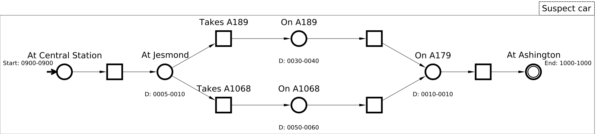
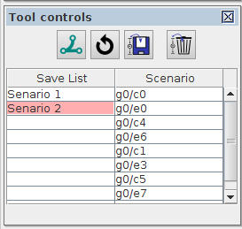

Table of Contents
Investigation of crime and accident scenes with Structured Occurrence Nets
In this tutorial we show how to use Structured Occurrence Nets formalism for modelling and analysis of crime and accident scenes.
A Traffic Accident Scenario
Modelling
The model consists of three occurrence nets (groups) with each represents the behaviour of individual party.
The behaviours of traffic light is captured by Traffic light group. The conditions represent different states of the traffic signal, i.e, Green, Amber, and Red. The groups Vehicle A and Vehicle B model the behaviours of two collided cars. Vehicle actions are modelled with Approach, Accelerate, Cross light and Crash events.
The two Crash events are in a synchronous interaction, indicating that they occurred at the same time. The dependency between Traffic light and Vehicle A are captured by behavioural relations. It intuitively means that, for instance, the traffic light was in a red color when the car crossed the light and crashed with the other one.

Re-created in Workcraft:
- Select File→Create work…
- Select Structured Occurrence nets from the list of model types
- To create each single occurrence net, use condition
 , event
, event  , and connection
, and connection  tools to draw model structure; use group
tools to draw model structure; use group  tool to combine the model into a group.
tool to combine the model into a group. - Use channel place
 and connection tools to create communication and behavioural relationships between occurrence nets.
and connection tools to create communication and behavioural relationships between occurrence nets.
Structural Verification
SONs structural properties can be verified using structural verification tool. It's important to do the verification before any further analysis. Otherwise the result may be incorrect.
The user can invoke verification by selecting Tools→Verification→Structural properties. In setting dialog:
- Select Types as Structured Occurrence Nets to verify all types of relationships defined in SONs concept.
- Select all groups in the Group selection to verify the entire model.

Simulation
To simulate the model, press the ![[M] Simulate](../../../help/core/editor_tools-simulate.png "[M] Simulate") button. The initial marking will be automatically set. and all of the enabled events will be identified by being coloured orange. Clicking on any enabled event causes tokens to move, event colouring to be updated, and the simulation record augmented.
button. The initial marking will be automatically set. and all of the enabled events will be identified by being coloured orange. Clicking on any enabled event causes tokens to move, event colouring to be updated, and the simulation record augmented.
The Crash events are in synchronous iteration. They will be enabled at the same time. Click on any of them causes two events occur simultaneously.
The simulation tool control panel provides additional functionality. For example:
- Use direction tool to change simulation direction
- Step forward/backward of an existing simulation trace
- Perform automatic simulation from current marking
Reachability Checking
Reachability checking establishes whether a given marking (a set of marked conditions and/or channel places) can be reachable at the same time from the initial marking. To perform the checking, double click on condition/channel place or use property editor to mark some nodes. Then select Tools→Verification→Reachability.
Download this model: car_accident.work (4 KiB)
Crime Investigation
Modelling
The model describes the behaviours of a suspect car monitored by police investigator. At 9:00 am, the car was spotted at Central Station by traffic camera. Then, at 10:00 am, the car appeared at Ashington. However, there is no future information captured by camera between 9:00-10:00. Assuming there are two roads that the car can take to Ashington. In order to analysis which road did the driver actually take, the investigator has to make hypothesis． In SONs model, such hypothesis can be represented using alternative behaviours and time information.
The condition At Jesmond has two output events Takes A189 and Takes A1068. It intuitively means that the car driver can either takes road A189 or A1068. Each of them belongs to different scenario. For each scenario, we can give estimated duration coming from empirical data. For example, the duration value D:0030-0040 implies that it will normally take about 30 - 40 mins if the drive choose road A189.

To set time information:
- Press the
![[T] Time value setter](son-time.png "[T] Time value setter") button in Editor tool panel.
button in Editor tool panel. - Select
At Central Station, and set start time as 0900 - 0900. - Select other conditions to set duration and time values.
To generate scenario:
- Press
 button in Editor tool panel.
button in Editor tool panel. - Press
 button, and then select one of the two enabled events to automatically generate a scenario.
button, and then select one of the two enabled events to automatically generate a scenario. - Press
 button to save the scenario.
button to save the scenario. - Press
 button to reset the generator, and repeat the above process but select another enabled event to generate a different scenario.
button to reset the generator, and repeat the above process but select another enabled event to generate a different scenario.

Time consistency checking
Once we complete the model, it's possible to analyse which scenario (road) did the drive most likely take using the specified time information (provided by traffic camera), estimated durations (from empirical data), and causal relations (provided by SONs model).
To perform such analysis:
- select Tools→Time analysis→Check for consistency...
- Set time granularity to 24-hour/mins.
- Select Check for causal consistency, this allows to verify the nodes with incomplete time information using causal relations.
- Choose one of the scenario in Selection panel.
- Press Run to see the verification result.

The verification uses the above information to calculate estimated time values. Then check whether the estimated time values and specified time values are consistency with each other. As the result, the time information in Scenario 1 is inconsistent. While the time information in Scenario 2 is consistent.
Download this model: crime.work (4 KiB)